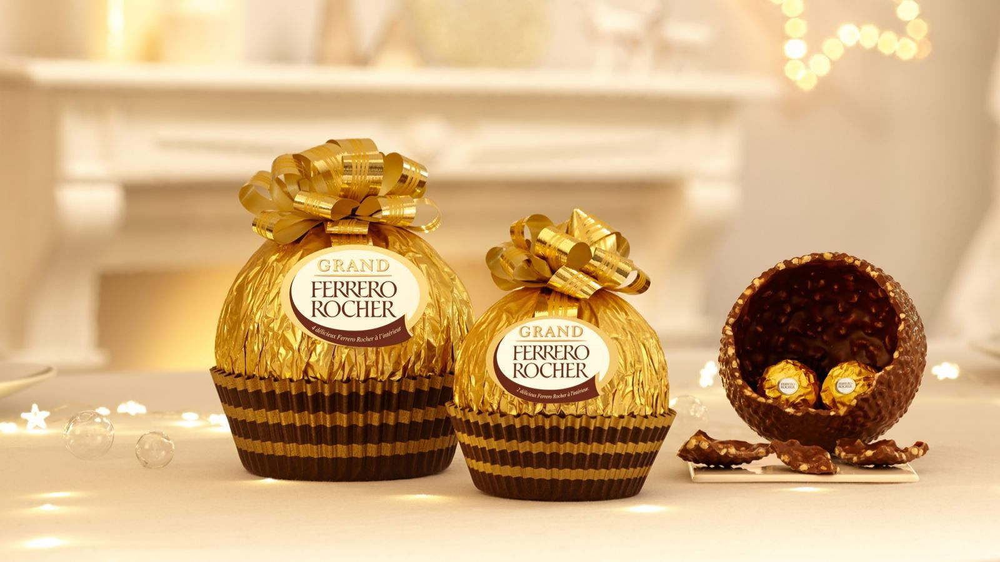
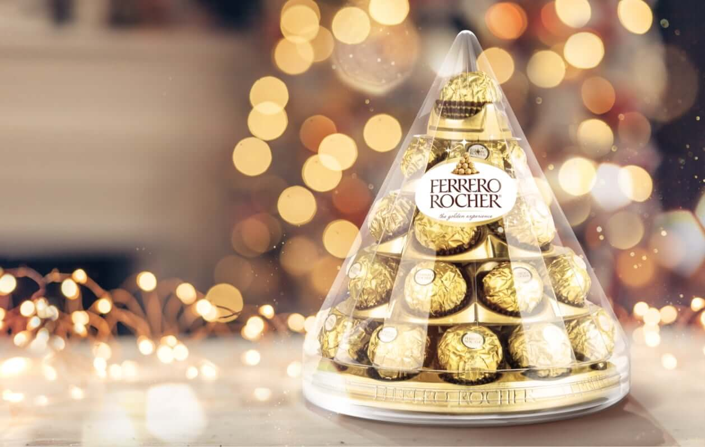
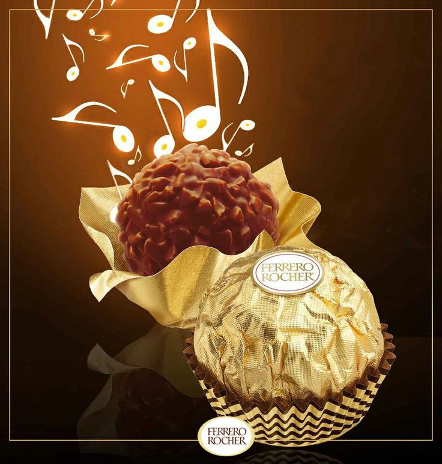
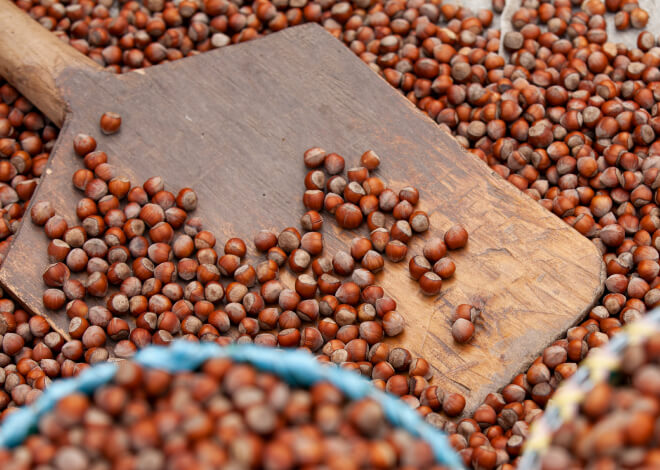

EL MUNDO DE FERRERO ROCHER

¿Qué hace tan especial a Ferrero Rocher? Descubre su secreto. La creación de Ferrero Rocher se inspiró en la larga historia y los conocimientos de la pastelería italiana.
En la actualidad, impulsada por la misma pasión y la infinita atención a la calidad, Ferrero Rocher es una de las marcas más apreciadas en todo el mundo. Deja que comience el viaje y sumérgete en la exclusiva experiencia de Ferrero Rocher.
CELEBRACIONES DE TEMPORADA

Las especialidades de temporada de Ferrero Rocher están creadas para los períodos más festivos del año, porque la vida es mejor cuando se comparten los placeres con los que más te importan.
Descubre unas creaciones atemporales para regalar o compartir y celebrar momentos especiales con tus familiares y amigos.
Vuelve pronto para ver la exclusiva selección navideña de Ferrero Rocher.
EXPERIENCIA Y ARTE

En Ferrero hemos creado una meticulosa estrategia de control y garantía de calidad desde la materia prima hasta la experiencia de degustación del consumidor de cada Ferrero Rocher.
La calidad es la promesa que mantenemos con cada Ferrero Rocher, gracias al cuidado con el que se fabrican, envasan y almacenan.
Un producto con una experiencia y un arte rigurosos, combinados en perfecta armonía.
CUIDADO Y ALMACENAMIENTO

En Ferrero, nos preocupa ofrecer lo mejor y nos esforzamos al máximo para garantizar que todos y cada uno de los Ferrero Rocher se traduzcan en una experiencia multisensorial para ti.
En esa etapa necesitamos que colabores con nosotros y nos ayudes a mantener las especialidades de Ferrero Rocher en condiciones óptimas, para poder disfrutarlas y saborearlas correctamente.